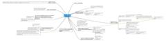

MirandaMod, 5th October 2009
MirandaMod, 5th October 2009
At the Handheld Learning Conference
Participants in the Handheld Learning MirandaMod raised a fascinating
range of issues linking theory and practice about the use of ubiquitous
technologies in informal learning, and the ways in which they can impact
formal education.
The session addressed these questions:
- Can these technologies make learning for professionals, teachers and students
more personal and relevant? - How can we re-conceptualise assessment, so that
it better reflects the ways in which knowledge is developed collaboratively?
Or should we give
up on the nostrum of online learning? - What is the value of the learning
experience balanced again the expense and the risk?
There was a lively discussion from the participants: PGCE students, practitioners,
academics and a number of overseas colleagues, with a particularly strong
contingent from Australia.
Sharing and collaborating on the map
{kind=link}
All participants were invited to contribute
to an online concept map which represents the collaborative knowledge
built up by delegates at the
Handheld Learning conference, as well as their colleagues who
participated online. This open, wiki-type map that everyone may view and
use can
be found on:
Further information: